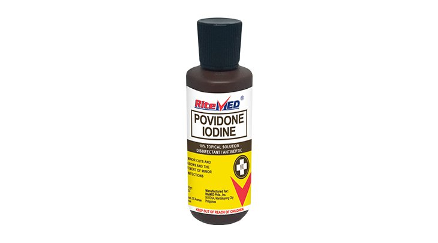
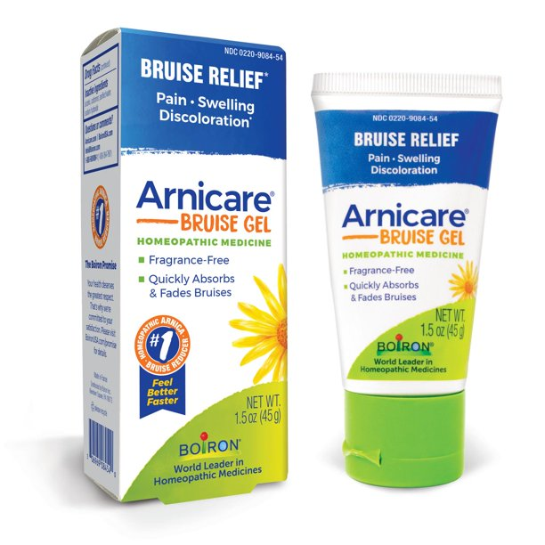
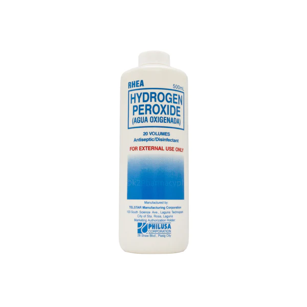
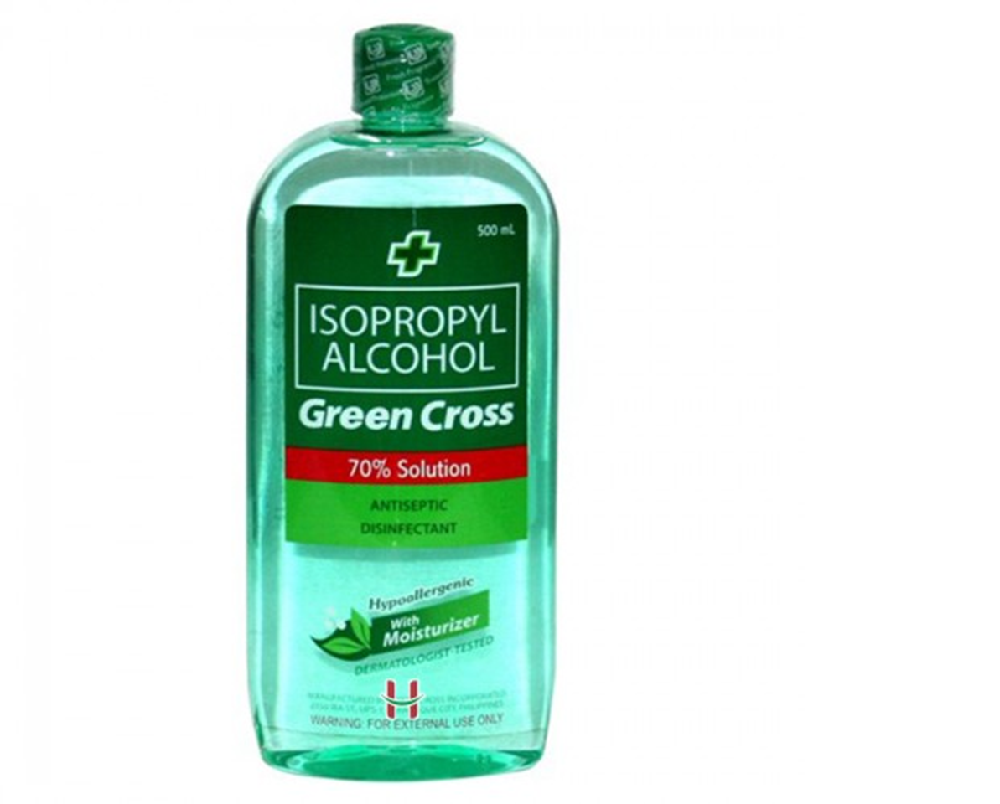
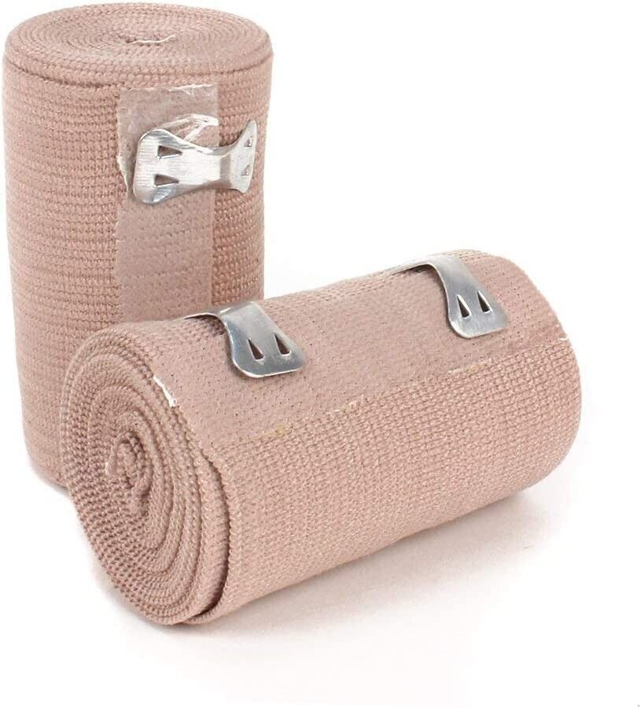

Medicine Guide For Bruises

⚠️ For serious injuries, administer first aid immediately. Then, contact emergency services or proceed to the nearest clinic. ⚠️

• clean the affected area.
• vapply a small amount of product to the area 1 to 3 timesdaily.
• may be covered with a sterile bandage.
• if bandaged, let dry first.
IODINE
Description
Povidone-iodine is a topical antiseptic agent used for the treatment and prevention of infection in wounds. Povidone-iodine is a stable chemical complex of polyvinylpyrrolidone (povidone, PVP) and elemental iodine. It contains from 9.0% to 12.0% available iodine, calculated on a dry basis.Guide
Directions• clean the affected area.
• vapply a small amount of product to the area 1 to 3 timesdaily.
• may be covered with a sterile bandage.
• if bandaged, let dry first.

• Repeat 3 times a day or as needed.
• If heat or ice is applied, wait 5 minutes before applying Arnicare Gel.
ARNICARE
Description
Arnica is a perennial that grows to a height of 1 to 2 feet with yellow-orange flowers similar to daisies. Stems are round and hairy, ending in 1 to 3 flower stalks, with flowers 2 to 3 inches across. Leaves are bright green.Guide
• Apply a thin layer of Arnicare Gel to affected area and massage gently as soon as possible after minor injury.• Repeat 3 times a day or as needed.
• If heat or ice is applied, wait 5 minutes before applying Arnicare Gel.

VOLTAREN
Description
Voltaren Emulgel contains the active ingredient diclofenac, which belongs to a group of medicines called Non-steroidal anti-inflammatory drugs (NSAIDs) Voltaren Emulgel has analgesic and anti-inflammatory properties and, due to the aqueous-alcoholic base, has a soothing and cooling effect.Guide
Voltaren Emulgel Extra Strength• Apply 2 g of gel 2 times a day (morning and evening) on the affected area.
• The amount of gel applied (2 g for each application) should be measured using the dosing card supplied in the product carton. ...
• Do not use more than 4 g per day.
BETADINE
Description
Contains Povidone-Iodine that has Triple-Kill Power vs. clinically significant pathogens85. Kills 99.99% germs and stops infection. Non-sting and painless and gentle on kids. Treats wounds, cuts, burns, abrasions, scratches, bedsores, lacerations and surgical wounds.Guide
Gently clean the affected area. Apply your preferred Betadine First Aid product to the affected area. The wound may be covered by a sterile bandage. If bandaged, let solution dry first.

Do not use in the eyes or apply over large areas of skin.
If you are using this product on the skin, clean the affected area before use. Apply a small amount of product on the affected area, usually 1 to 3 times daily or as directed by your doctor. If you apply a bandage after using this product, let the area dry first.
If you are using this product as a mouth rinse, mix with an equal amount of water before using. Swish in the mouth over the affected area for at least 1 minute, then spit out. Do not swallow this product. Rinse up to 4 times daily or as directed by your dentist or doctor.
Use this product regularly in order to get the most benefit from it. To help you remember, use it at the same time(s) each day.
Tell your doctor if your condition does not get better in 7 days or if it gets worse. If you think you may have a serious medical problem, get medical help right away.
AGUA OXIGENADA
Description
Hydrogen Peroxide (agua oxigenada) has an extra oxygen atom than water, this extra oxygen atom breaks down and the molecule of water releases from this separately.Guide
Follow all directions on the product package. If you have any questions, ask your doctor or pharmacist.Do not use in the eyes or apply over large areas of skin.
If you are using this product on the skin, clean the affected area before use. Apply a small amount of product on the affected area, usually 1 to 3 times daily or as directed by your doctor. If you apply a bandage after using this product, let the area dry first.
If you are using this product as a mouth rinse, mix with an equal amount of water before using. Swish in the mouth over the affected area for at least 1 minute, then spit out. Do not swallow this product. Rinse up to 4 times daily or as directed by your dentist or doctor.
Use this product regularly in order to get the most benefit from it. To help you remember, use it at the same time(s) each day.
Tell your doctor if your condition does not get better in 7 days or if it gets worse. If you think you may have a serious medical problem, get medical help right away.
BAND AID
Description
A piece of sticking plaster of a type having a gauze pad in the center, used to cover minor wounds.Guide
When applying a bandage, you should wrap it in a spiral pattern from the inside to the outside of the injured limb. You should also make sure the bandage is firm but not too tight.

ALCOHOL
Description
provides everyday, accessible disinfecting with its range of isopropyl- and ethyl-based rubbing alcohols. 99.9% effective against bacteria and viruses. Green Cross Alcohol also has moisturizing variants to prevent skin dryness.Guide
In order to use the Green Cross Solution, pour the mixture on your hands directly. You can also apply it with the help of cotton balls. Then, rub liberally and lightly on the skin until the solution blends in. Do not swallow or use the Green Cross Solution near eyes.
